Transfónico – FM transmitter suit
- Date
- February – March 2014
- Venue
- Interdisciplinary lab for smart garment creation, Plataforma Bogotá
- Role
- Programmer; interdisciplinary creation
- Technologies
- Raspberry Pi, Python, Arduino
- Credits
- Maribel Tuta, Natalia Esguerra, Natalia Parra, Paola Martínez, Eliana Sánchez, María Afanador, Ricardo Dueñas, Julián Henao, Hamilton Mestizo, José Moreno.
Transfónico is a low-power FM transmitter suit that broadcasts soundscapes and sounds, integrating the components needed to transmit (antenna, transmitter and mixer). When worn, the suit becomes an independent radio station that lets its wearer seek calm and tranquility through sound while sharing that calm with others: anyone nearby with a radio receiver or a phone with FM radio.
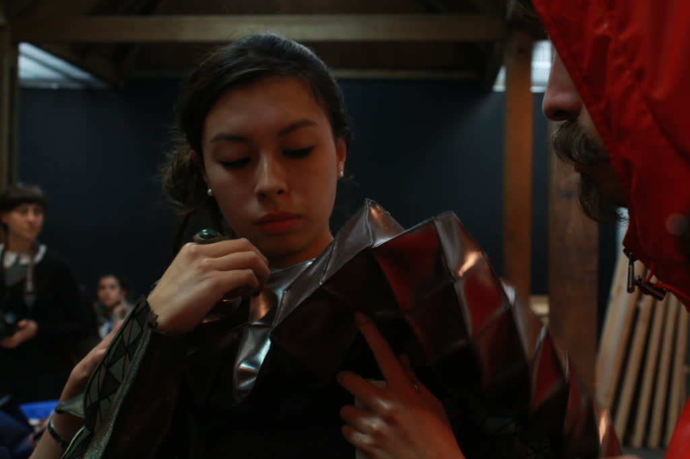
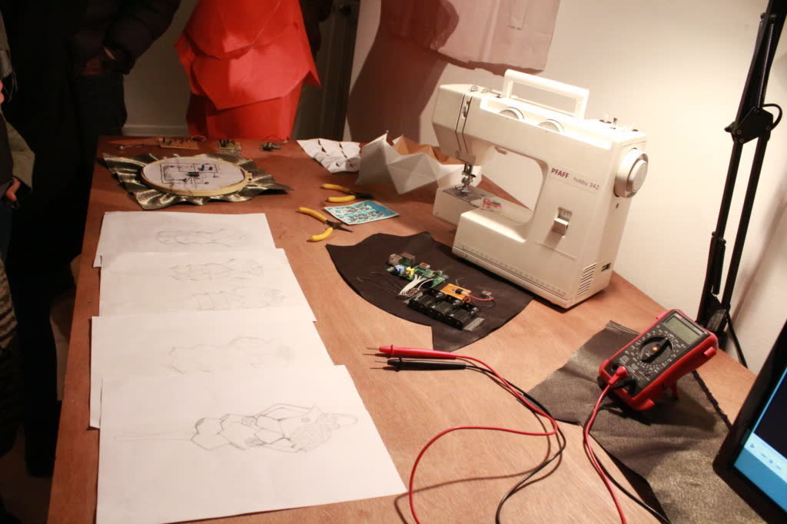
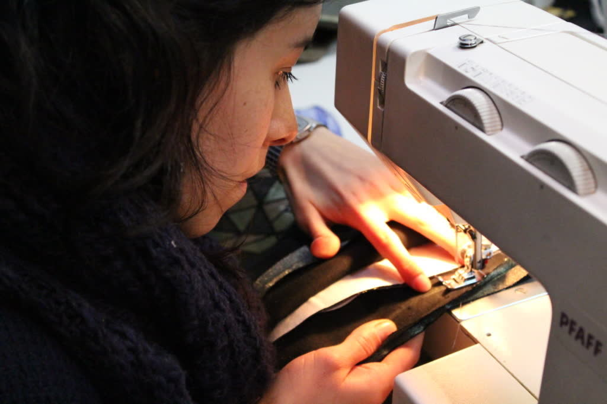
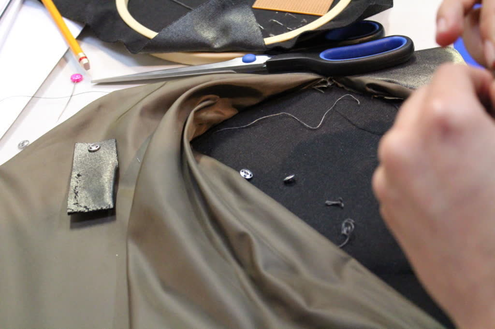
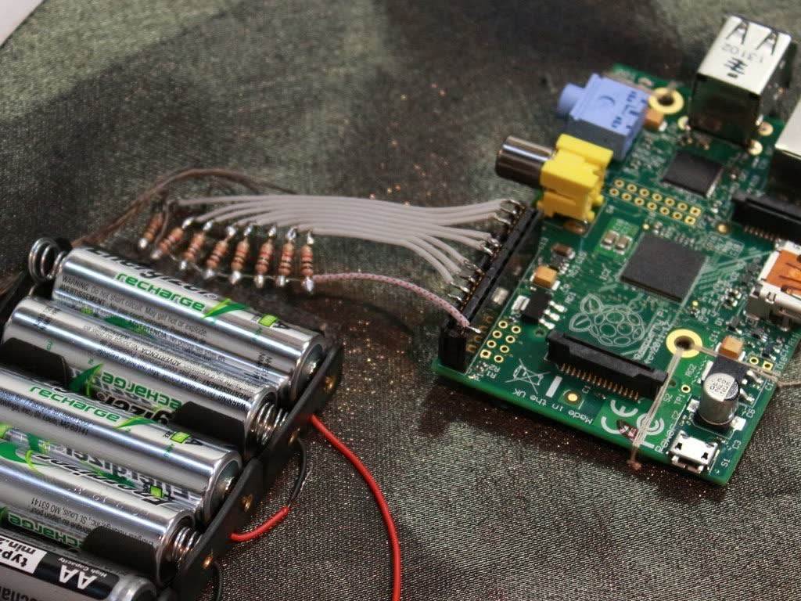
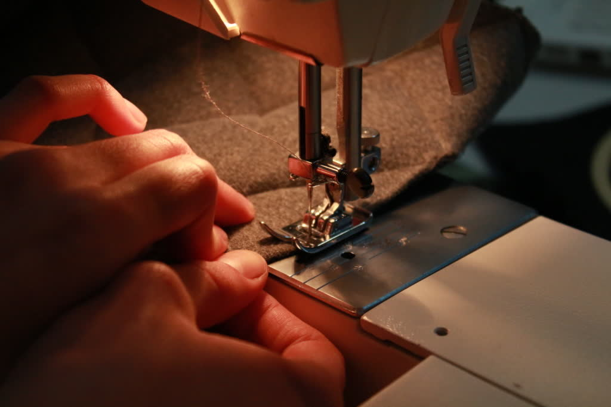
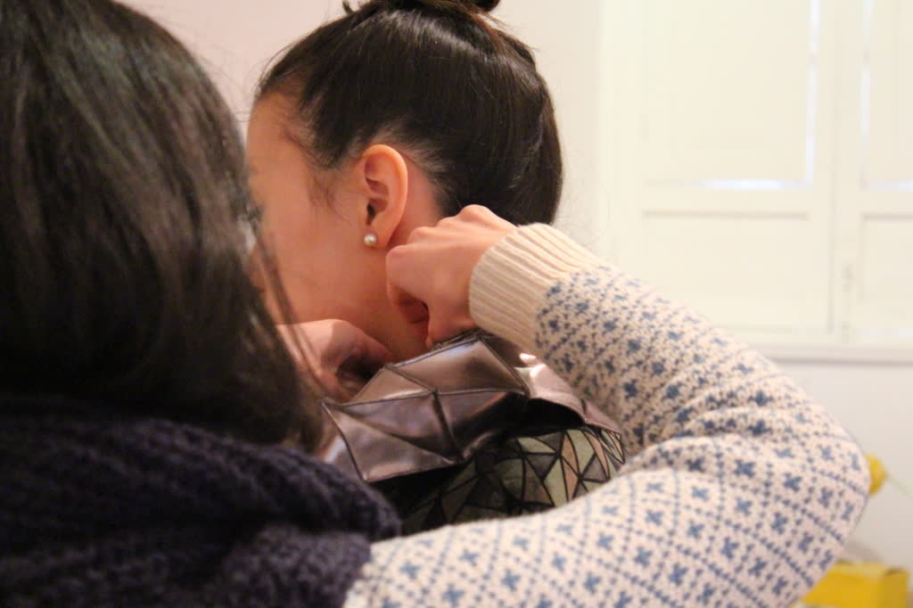
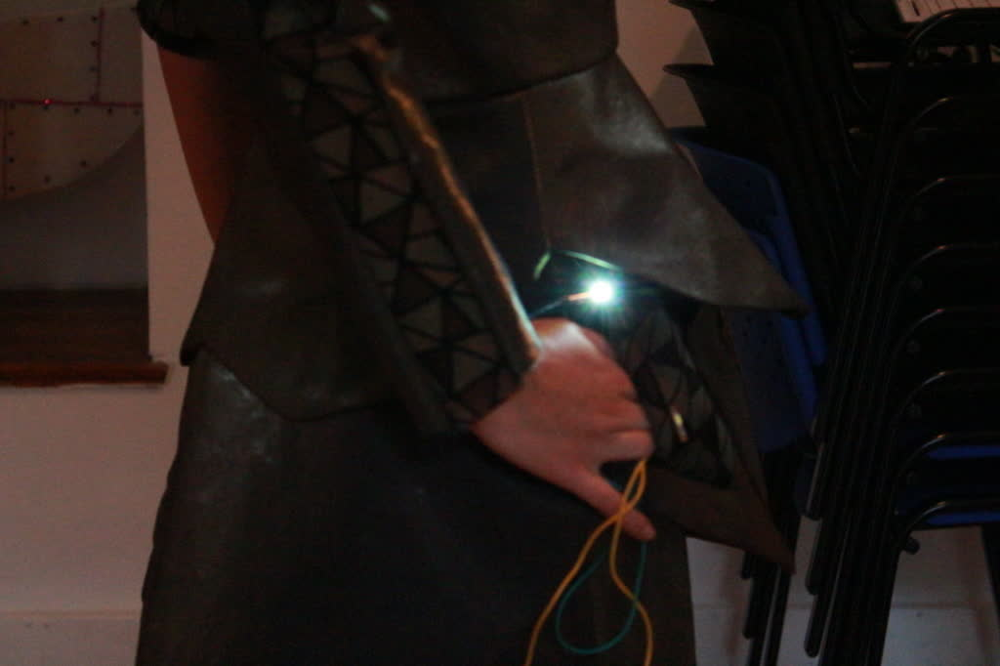
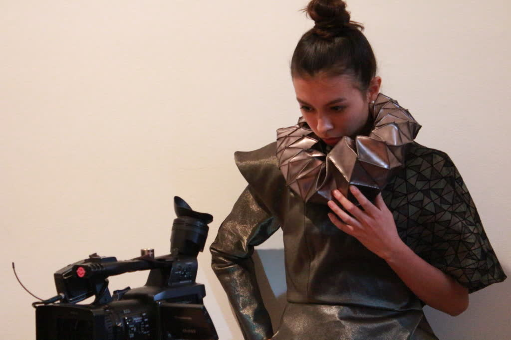
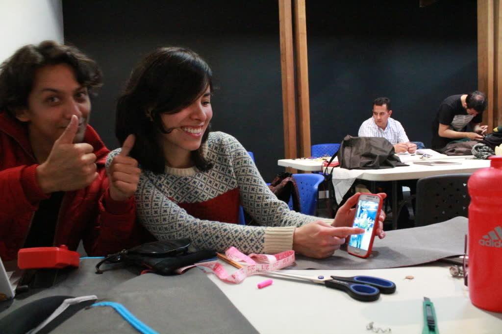
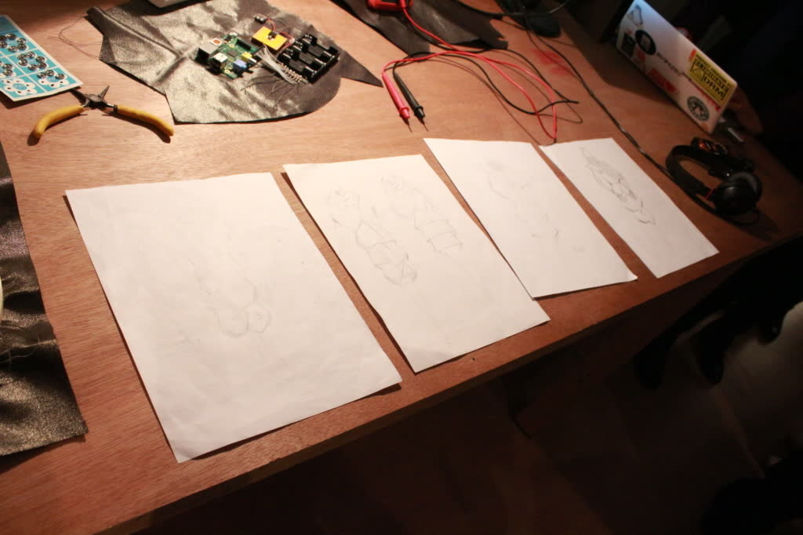
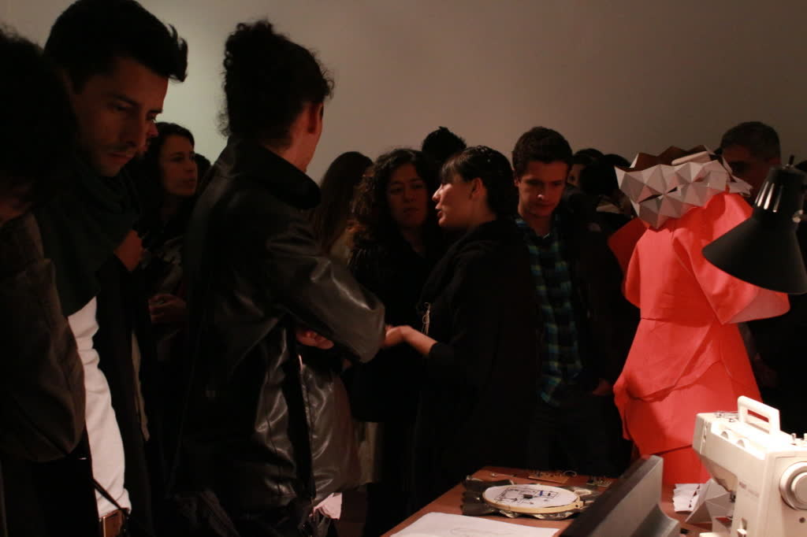
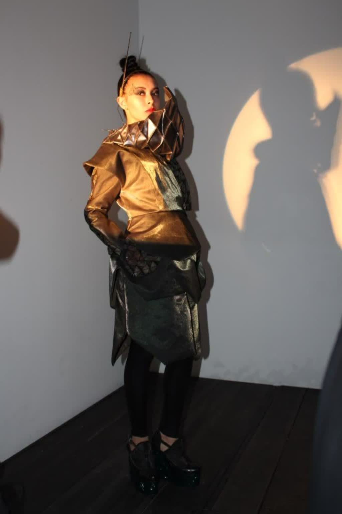
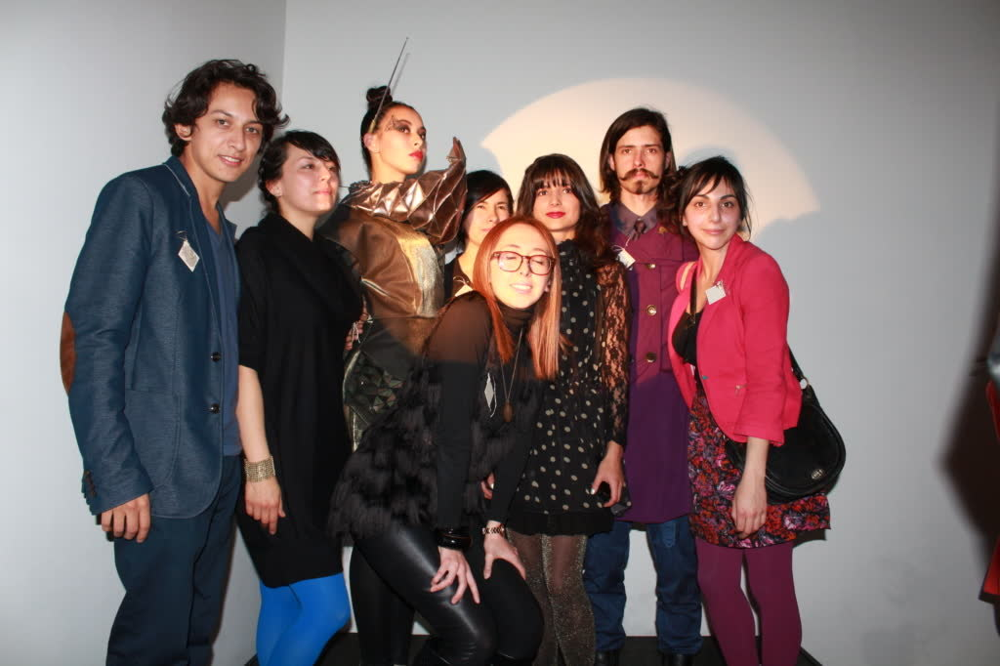